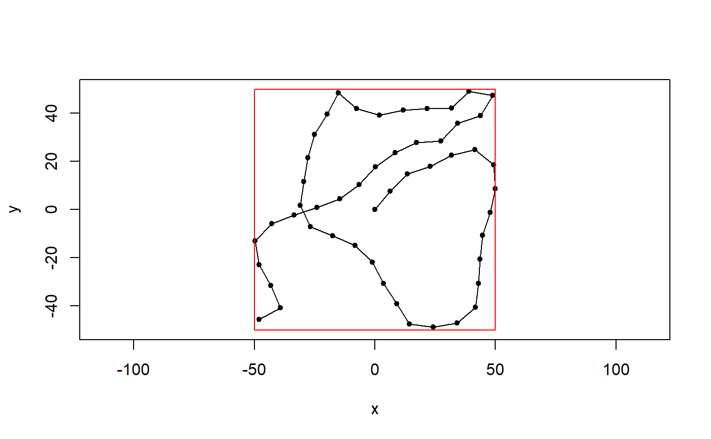
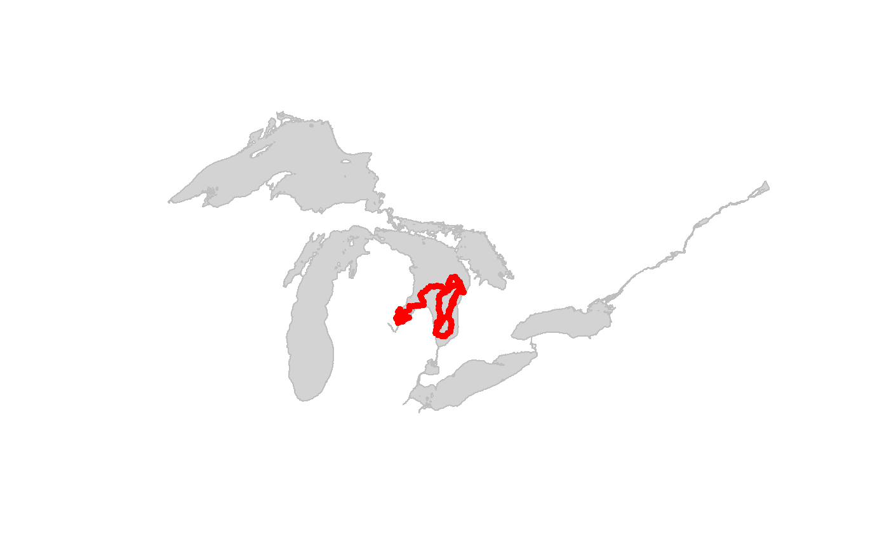
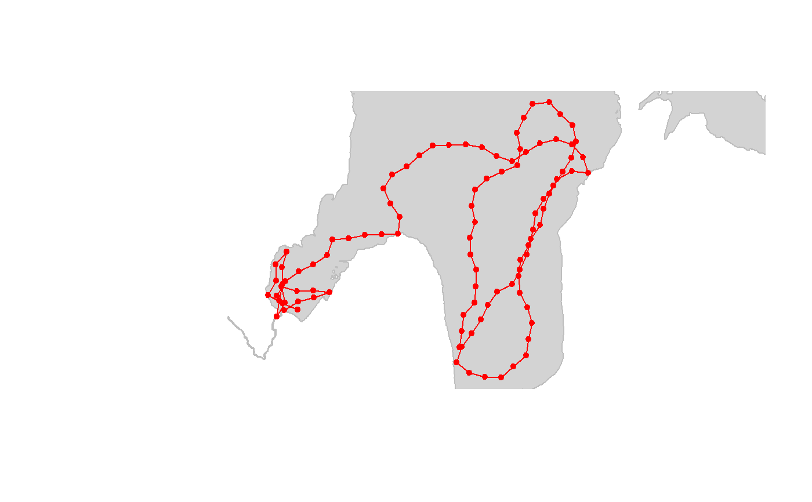

crw_in_polygon.RdUses crw to simulate a random walk as series of equal-length steps with turning angles drawn from a normal distribution inside a polygon.
crw_in_polygon(polyg, theta = c(0, 10), stepLen = 100, initPos = c(NA, NA), initHeading = NA, nsteps = 30, EPSG = 3175, sp_out = FALSE)
| polyg | A |
|---|---|
| theta | A 2-element numeric vector with turn angle parameters (theta[1] = mean; theta[2] = sd) from normal distribution. |
| stepLen | A numeric scalar with total distance moved in each step.
Units are same as the units of the coordinate reference system specified
by argument |
| initPos | A 2-element numeric vector with initial position
(initPos[1]=x, initPos[2]=y) in same units as |
| initHeading | A numeric scalar with initial heading in degrees. |
| nsteps | A numeric scalar with number of steps to simulate. |
| EPSG | Numeric EPSG code of the coordinate system used for simulations. Default is 3175, a projected coordinate system for the North American Great Lakes Basin and St. Lawrence River system. http://spatialreference.org/ref/epsg/nad83-great-lakes-and-st-lawrence-albers/ |
| sp_out | Logical. If TRUE then output is a SpatialPoints object. If FALSE (default), then output is a data.frame. |
A SpatialPoints object in the same CRS as the input
polyg object.
OR
A two-column data frame containing:
x coordinates
y coordinates
If initPos = NA, then a starting point is randomly selected within the polygon boundary. A path is simulated forward using the crw function. Initial heading is also randomly selected if initHeading = NA. When a step crosses the polygon boundary, a new heading for that step is drawn and the turn angle standard deviation is enlarged slightly for each subsequent point that lands outside the polygon.
The path is constructed in segments based on the minimum distance between the previous point and the closest polygon boundary.
Simulations are conducted within the coordinate system specified by
argument EPSG. The default EPSG (3175), covers only the Great Lakes
of North America. Simulations conducted in other areas will need to specify
a valid EPSG for the study area.
#Simple box example mypolygon <- data.frame(x = c(-50,-50, 50, 50), y = c(-50,50,50,-50)) foo <- crw_in_polygon(mypolygon, theta = c(0, 20), stepLen = 10, initPos=c(0,0), initHeading=0, nsteps=50)#>#> | | | 0% | |========== | 14% | |=========== | 16% | |============= | 18% | |============== | 20% | |=============== | 22% | |================= | 24% | |================== | 26% | |==================== | 28% | |===================== | 30% | |====================== | 32% | |======================== | 34% | |========================= | 36% | |=========================== | 38% | |============================ | 40% | |============================= | 42% | |=============================== | 44% | |================================ | 46% | |================================== | 48% | |=================================== | 50% | |==================================== | 52% | |====================================== | 54% | |======================================= | 56% | |========================================= | 58% | |========================================== | 60% | |=========================================== | 62% | |============================================= | 64% | |============================================== | 66% | |================================================ | 68% | |================================================= | 70% | |================================================== | 72% | |==================================================== | 74% | |===================================================== | 76% | |======================================================= | 78% | |======================================================== | 80% | |========================================================= | 82% | |=========================================================== | 84% | |============================================================ | 86% | |============================================================== | 88% | |=============================================================== | 90% | |================================================================ | 92% | |================================================================== | 94% | |=================================================================== | 96% | |===================================================================== | 98% | |======================================================================| 100%#>#Great Lakes Example data(greatLakesPoly) #simulate in great lakes polygon foo2 <- crw_in_polygon(greatLakesPoly,theta=c(0,25), stepLen=10000, initHeading=0, nsteps=100, sp_out = TRUE)#>#> | | | 0% | |== | 3% | |=== | 4% | |==== | 5% | |==== | 6% | |===== | 7% | |====== | 8% | |====== | 9% | |======= | 10% | |======== | 11% | |======== | 12% | |========= | 13% | |========== | 14% | |========== | 15% | |=========== | 16% | |============ | 17% | |============= | 18% | |============= | 19% | |============== | 20% | |=============== | 21% | |=============== | 22% | |================ | 23% | |================= | 24% | |================== | 25% | |================== | 26% | |=================== | 27% | |==================== | 28% | |==================== | 29% | |===================== | 30% | |====================== | 31% | |====================== | 32% | |======================= | 33% | |======================== | 34% | |======================== | 35% | |========================= | 36% | |========================== | 37% | |=========================== | 38% | |=========================== | 39% | |============================ | 40% | |============================= | 41% | |============================= | 42% | |============================== | 43% | |=============================== | 44% | |================================ | 45% | |================================ | 46% | |================================= | 47% | |================================== | 48% | |================================== | 49% | |=================================== | 50% | |==================================== | 51% | |==================================== | 52% | |===================================== | 53% | |====================================== | 54% | |====================================== | 55% | |======================================= | 56% | |======================================== | 57% | |========================================= | 58% | |========================================= | 59% | |========================================== | 60% | |=========================================== | 61% | |=========================================== | 62% | |============================================ | 63% | |============================================= | 64% | |============================================== | 65% | |============================================== | 66% | |=============================================== | 67% | |================================================ | 68% | |================================================ | 69% | |================================================= | 70% | |================================================== | 71% | |================================================== | 72% | |=================================================== | 73% | |==================================================== | 74% | |==================================================== | 75% | |===================================================== | 76% | |====================================================== | 77% | |======================================================= | 78% | |======================================================= | 79% | |======================================================== | 80% | |========================================================= | 81% | |========================================================= | 82% | |========================================================== | 83% | |=========================================================== | 84% | |============================================================ | 85% | |============================================================ | 86% | |============================================================= | 87% | |============================================================== | 88% | |============================================================== | 89% | |=============================================================== | 90% | |================================================================ | 91% | |================================================================ | 92% | |================================================================= | 93% | |================================================================== | 94% | |================================================================== | 95% | |=================================================================== | 96% | |==================================================================== | 97% | |===================================================================== | 98% | |===================================================================== | 99% | |======================================================================| 100%#>#plot sp::plot(greatLakesPoly, col = "lightgrey", border = "grey")#zoom in sp::plot(greatLakesPoly, col = "lightgrey", border = "grey", xlim = sp::bbox(foo2)[1,], ylim = sp::bbox(foo2)[2,])